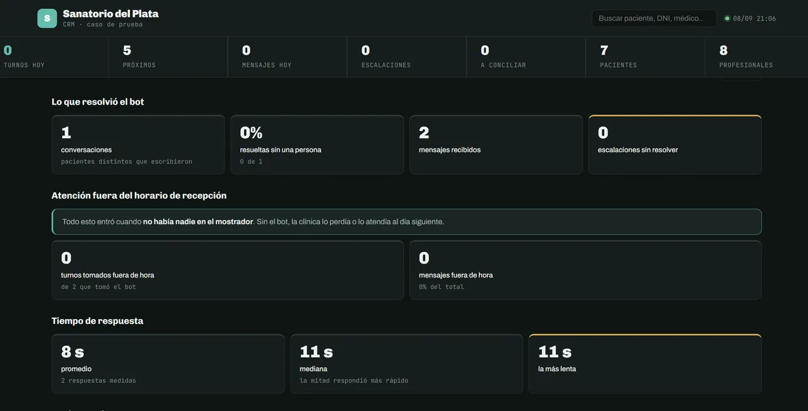
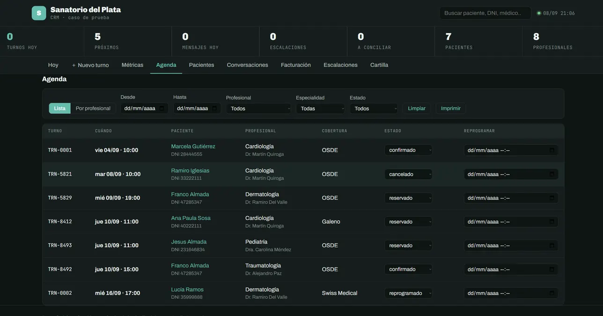

Caso de estudio · Clínica · turnos por WhatsApp
Sanatorio del Plata
Una recepcionista de WhatsApp que saca turnos, lee comprobantes y sabe cuándo callarse
Sanatorio del Plata es una clínica ficticia con ocho profesionales y un mostrador que cierra a las 21. Construimos el sistema completo que la atendería las 24 horas: un orquestador que decide a quién le toca cada mensaje, un agente de turnos que reserva sobre la agenda real, una base de conocimiento para las preguntas de siempre, lectura de comprobantes con OCR, recordatorios, escalación a una persona y un CRM para la recepción. Ocho workflows de n8n y un solo archivo de configuración para instalarlo en otra clínica.
El problema
Fuera del horario de recepción el WhatsApp suena y nadie contesta. Adentro del horario, la recepción repite las mismas respuestas: obras sociales, horarios, estudios. Y cuando un paciente escribe por una urgencia, el sistema tiene que reconocerla y no ofrecerle un turno para la semana que viene.
Cómo funciona
Paso por paso, como pasa de verdad.
Un mensaje entra por WhatsApp Cloud API y lo normaliza un Code node: queda { mensaje, teléfono, nombre, canal }.
El orquestador (un agente con tres herramientas) no resuelve: decide a quién le toca. Turnos, consultas o escalación.
El agente de turnos consulta la planilla real de cada médico, reserva, modifica o cancela, y registra al paciente.
Las preguntas frecuentes las contesta una base de conocimiento vectorial (Qdrant) armada desde los documentos de la clínica.
Una urgencia se reconoce y va a la guardia: el sistema no le da un turno para la semana que viene a alguien con dolor de pecho.
Los comprobantes de pago se leen con OCR y se concilian contra el padrón. Los recordatorios salen 24 horas antes.
Lo que el bot no puede resolver lo anota y avisa a una persona por Telegram. Y si cualquier workflow se rompe, el SDP-7 lo cuenta.
El sistema, abierto
Capturas reales del CRM y del panel, no maquetas.


Las fases
Cada una con su criterio de listo y su estado real.
| Fase | Estado | Nota |
|---|---|---|
| SDP-0 | — apagada | apagado |
| SDP-1 | ✔ activa | activo |
| SDP-2 | ✔ activa | activo |
| SDP-3 | ✔ activa | activo |
| SDP-4 | — apagada | apagado — necesita plantilla aprobada por Meta |
| SDP-5 | ✔ activa | activo |
| SDP-6 | ✔ activa | activo |
| SDP-7 | ✔ activa | activo |
Qué se probó
Este caso se probó a mano, conversación por conversación, antes de que existiera el verificador automático de la agencia. Los casos nuevos nacen con él.
Con honestidad: Sanatorio del Plata no es un cliente: es un caso construido por la agencia como demostración, con marca y datos ficticios. Lo que sí es real es el sistema: los ocho workflows corren, el CRM se abre y las conversaciones de prueba están grabadas. Los números de esta página salen del propio panel del sistema, no de una estimación.